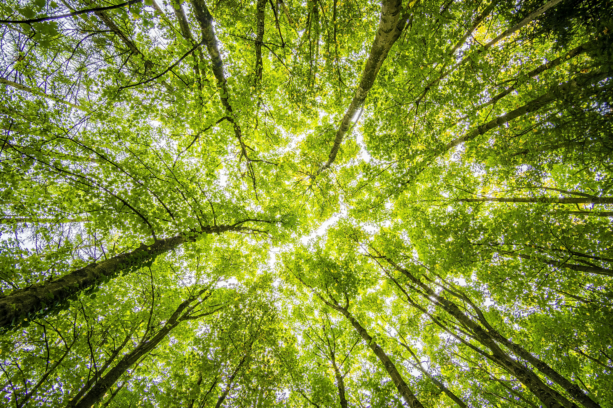
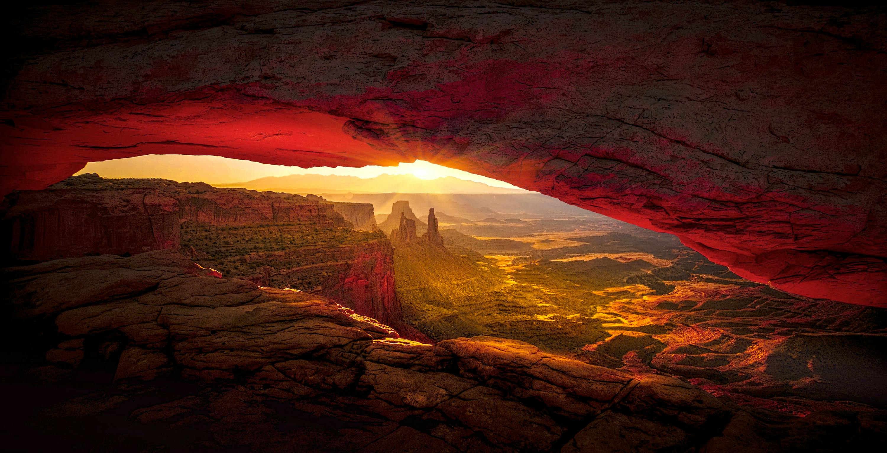

Discover the breathtaking wonders of our natural world

Sunlight filtering through a dense forest canopy
Welcome to Nature Explorer, your gateway to Earth's most magnificent landscapes. Our planet is home to an incredible diversity of ecosystems, each with its own unique beauty and ecological importance. Did you know that oceans not only cover more than 70% of Earth's surface but also produce over half of the world's oxygen through phytoplankton photosynthesis?
From the towering mountain ranges that shape our continents to the vast underground networks of caves, nature's artistry is unparalleled. Forests, which we'll explore in depth, are particularly fascinating as they serve as the planet's lungs while supporting countless species in their complex ecosystems.

The majestic Grand Canyon at sunset
We're currently highlighting the world's most spectacular canyons, those breathtaking chasms carved by rivers over millions of years. These geological wonders tell the story of Earth's history in their stratified rock layers. The Grand Canyon, for instance, exposes nearly two billion years of geological history in its walls. Similarly stunning but less known are the desert canyons like Antelope Canyon with its wave-like sandstone formations.
"In every walk with nature one receives far more than he seeks. The clearest way into the Universe is through a forest wilderness."— John Muir, naturalist and conservationist who found inspiration in the Sierra Nevada mountains
Water shapes our planet in remarkable ways. The constant flow of rivers carves landscapes, nourishes ecosystems, and provides vital resources. Where rivers encounter sudden elevation changes, they create spectacular waterfalls like Niagara or Angel Falls. Meanwhile, the serene beauty of alpine meadows in bloom offers a completely different but equally captivating water-related landscape.
At the opposite extreme, Earth's fiery power is on display in volcanic regions, where molten rock from deep within the planet reaches the surface. These areas, while dangerous, create some of the most fertile soils and unique ecosystems on Earth.